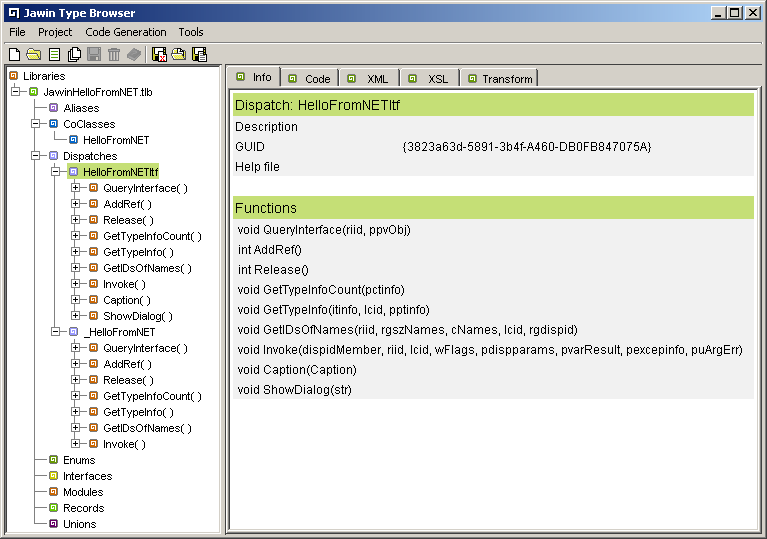
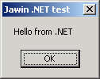

Besides the COM and Win32 interoperability, Jawin can also be used for in-process interoperability with the Microsoft .NET platform. This can be accomplished because the .NET development tools makes it possible to export .NET objects as COM-objects.
If in-process interoperability is not strictly needed, the recommended (and buzzword compatible) way to communicate between .NET and Java services is probably to use webservices. There should be plenty of resources around the Internet and in books, that explains webservices. One starting resource could be WS-I - the Web Services Interoperability Organization.
So back to in-process .NET interop - this part of the Jawin userguide walks through a short demo showing the steps in calling .NET code from Jawin.
This short example has been tested with the .NET Framework 1.1. Together with the .NET runtime for running the example, the .NET SDK (or Visual Studio .NET) is needed to compile the .NET source.
The Ant build file for the Jawin demos (demos/build.xml),
contains a target, net-hello, which builds and invokes
the Jawin .NET demo. To use this target, the .NET tools must be
in the path, this includes at least csc.exe for compiling
and regasm.exe for exporting the typelibrary and
registering the .NET code as a COM object.
The example uses C# as the language for the .NET objects, but it is believed that any of the other languages in the .NET platform might as well be used (eg. VB.NET). Please note that I am neither a .NET or C# developer, so there may be issues in the C# example source that could/should normally be done in another more standard way.
The example C#-source can be found in the demos/net folder
in the binary Jawin distribution. The example is a very simple class
with a writeable "caption"-property, and a method showing a popup dialog
with the "caption"-property as caption and a given text-string as
content. The example is split into an interface and an implementation
class, as this will make the generated COM-objects easier to use as
an IDispatch interface. The exact type conversion rules
are described in this
MSDN
.NET developers article on type conversion.
The file HelloFromNETItf.cs contains the interface for the
.NET object, which the .NET typelibrary export tool will later
automatically export as a socalled dual interface (both vtable and
dispatch based).
using System.Runtime.InteropServices; // necessary for the Guid attribute
namespace Org.Jawin.NETTest {
[Guid("3823a63d-5891-3b4f-A460-DB0FB847075A")]
public interface HelloFromNETItf {
// a writeable property named Caption
string Caption {
set;
}
void ShowDialog(string str);
}
}
The file HelloFromNET.cs contains the implementation class
for this interface. Please notice that a public no-argument constructor
is needed to make the class instantiable via COM.
using System.Runtime.InteropServices; // necessary for the Guid and ProgId attributes
namespace Org.Jawin.NETTest {
[Guid("25c2f5a2-1afe-36ce-BE27-84E040F5E19A")]
[ProgId("Jawin.HelloFromNET")] // Register the CLSID under this shortcut ProgId
public class HelloFromNET : HelloFromNETItf {
// Need a public default no-arg constructor for COM Interop.
public HelloFromNET() {
}
public string Caption {
set { this.caption = value; }
}
public void ShowDialog(string str) {
System.Windows.Forms.MessageBox.Show(str, caption);
}
private string caption;
}
}
The C# source code is compiled and linked into a DLL with the command
csc /target:library /out:JawinHelloFromNET.dll *.cs
The typelibrary can then be exported from this DLL and the embedded types be automatically registered as COM objects and interfaces with the command
regasm /tlb JawinHelloFromNET.dll
Note, that the demos Ant build file, contains a target that automates
these two commandlines, the demos-net-compile target. After
running this target the built files can be found in the
demos/build/net folder.
There is one single issue left, after registering the COM objects. That
is this phrase from the regasm documentation
After registering an assembly using Regasm.exe, you can install it in the global assembly cache (GAC) so that it can be activated from any COM client. If the assembly is only going to be activated by a single application, you can place it in that application's directory.
Our example .NET assembly does not have a socalled strong name
and can therefore not be installed in the GAC. To run the example
you therefore have to place the generated JawinHelloFromNET.dll
in the application's directory. This does (opposite to what one
would expect) NOT have to be usual working directory but instead
seems to be the directory where ones launching process, ie. java.exe is
placed. Unfortunately this can be several places, usually one of the
following: %WINDIR%/system32,
%JAVA_HOME%/bin or %JAVA_HOME%/jre/bin. To
find the exact location you will have to copy the DLL around until
the demo launches. If you haven't placed the DLL correctly you will
get an error like
org.jawin.COMException: 80070002: File or assembly name
JawinHelloFromNET, or one of its dependencies, was not found.
[src=null,guid={00000000-0000-0000-0000-000000000000}]
The exported typelibrary, JawinHelloFromNET.tlb, is a standard
typelibrary that can be used as input in the
Jawin Type Browser.
As shown on the picture, the typelibrary contains one CoClass and
two dispatch interfaces.

As can be seen from the picture, the HelloFromNETItf
resembles the C# interface with the same name, that is it contains
the Caption and ShowDialog methods.
Opposed to this, the _HelloFromNET interface was generated
from the HelloFromNET class and does not publish these
methods directly (but they can of course be invoked with the standard
Invoke-method on this IDispatch interface).
So this is why we made the C# interface in section 2, and the reason
why the (hidden/internal) _HelloFromNET dispatch interface
can be ignored.
A slightly modified version of the code the Jawin TypeBrowser generates
for the HelloFromNETItf interface can be found in the
Java class demos.HelloFromNETItf in the
demos/demos/HelloFromNETItf.java-file.
The CoClass HelloFromNET contains a static CLSID field
with the CLSID for the HelloFromNET-implementation. This can be used
when instantiating a demos.HelloFromNETItf-object, or
the ProgId Jawin.HelloFromNET can be used. Sample
code showing how to use the HelloFromNETItf-class is
in the demos/demos/HelloNET.java-file.
This demo can then be run with the net-hello target
in the demos Ant build file, which should hopefully generate a popup like

which is actually Java code calling into the .NET code, which launches
the dialog.
Additional resources and links to tools and articles
| Copyright (c) 2000-2005, The Jawin Project - LICENSE |
|
| This documentation was written for version: 2.0, alpha 1 of Jawin. | |
| $Id: jawinuserguide_net.html,v 1.2 2004/08/01 21:34:26 arosii_moa Exp $ |